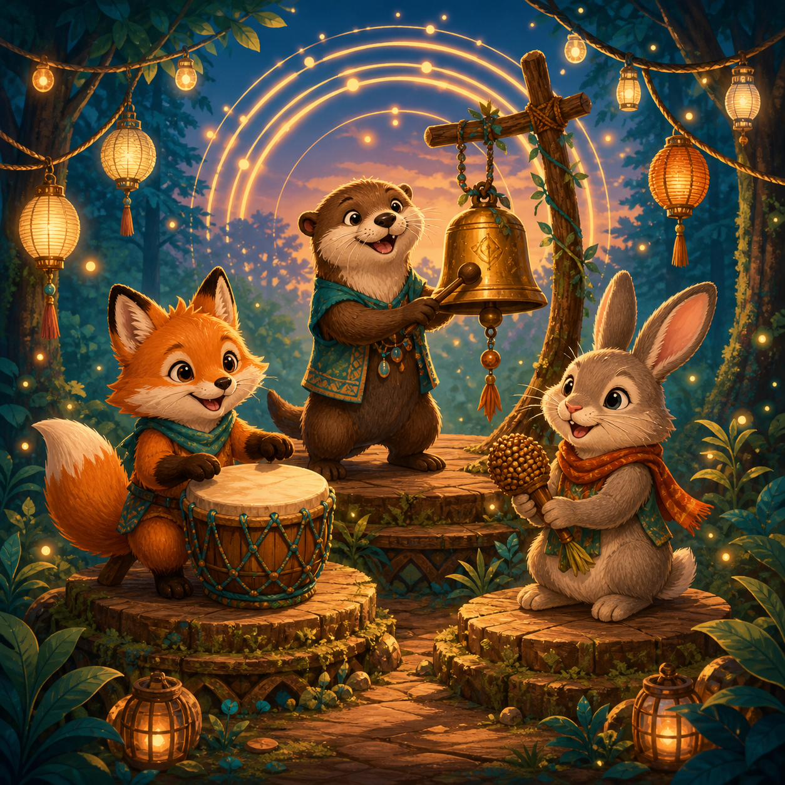

Tap the glowing station in time. Stay with the beat and build a combo.

Tap the glowing station in time. Stay with the beat and build a combo.
Watch the pulse, then tap the glowing station when its ring is full. Each tap advances the parade; accuracy grows your combo, but the round never ends on one missed beat.
Tap when the pulse reaches the gold band.
Your unfinished relay will be discarded. Your saved best relay stays safe.
Festival finale